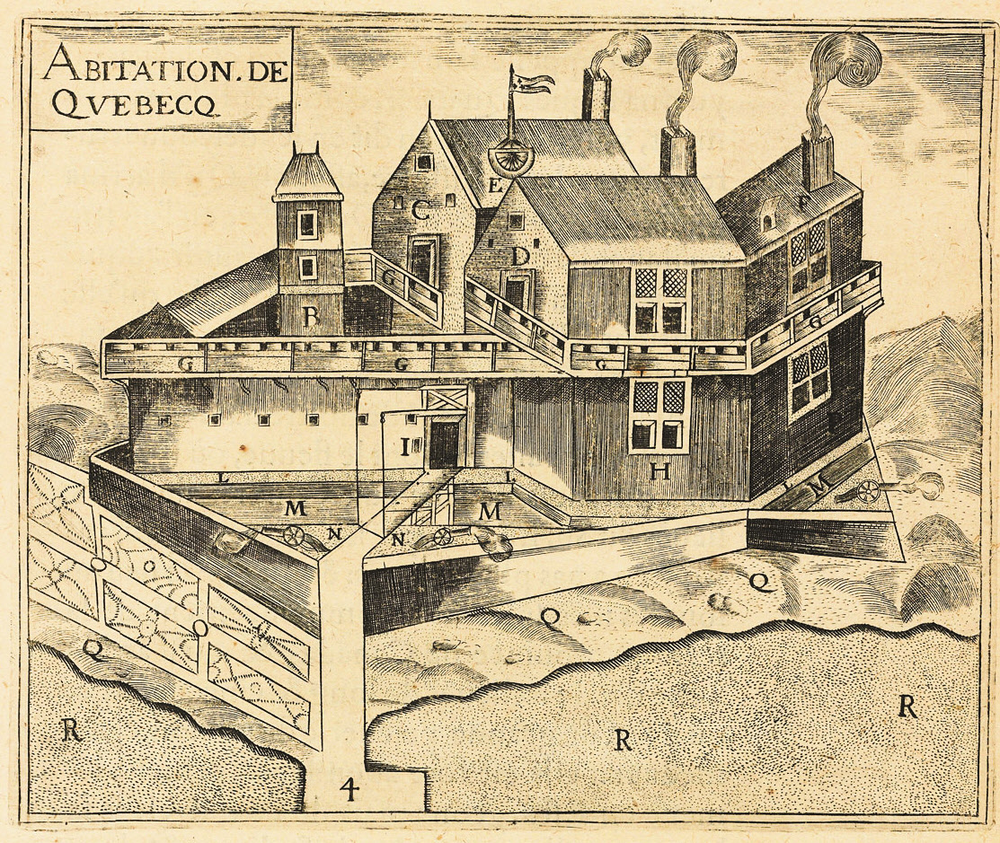

Name ______________________Date ______________Period __________
Two Empires, One Hemisphere
Directions: Work through the five stations in order. For each record, name the empire it belongs to and the system it shows, and state whose labor or whose land the system organized. At the end, complete the comparison table and judge which empire's way of holding America proved stronger by 1700. Stations 1, 2, and 5 are verbatim documents with cuts marked by ellipses and disclosed in the Source lines. Stations 3 and 4 are labeled summaries on their face.
Part 1: Five Stations
Station 1: Bernal Diaz Enters Tenochtitlan, 1519
Source: Bernal Diaz del Castillo, True History of the Conquest of New Spain, written 1568, translated by John Ingram Lockhart from the 1632 Madrid edition (London, 1844), as recorded in the audited TPSP record. Cuts are marked with ellipses.
When we gazed upon all this splendour at once, we scarcely knew what to think, and we doubted whether all that we beheld was real. A series of large towns stretched themselves along the banks of the lake, out of which still larger ones rose magnificently above the waters. Innumerable crowds of canoes were plying everywhere around us; at regular distances we continually passed over new bridges, and before us lay the great city of Mexico in all its splendour.
And we who were gazing upon all this, passing through innumerable crowds of human beings, were a mere handful of men, in all 450, our minds still full of the warnings which the inhabitants of Huexotzinco, Tlascalla, and Tlalmanalco, with the caution they had given us not to expose our lives to the treachery of the Mexicans. ... This our bold and memorable entry into the large city of Temixtitlan-Mexico took place on the 8th of November, 1519.
Diaz counts his own company at 450 men. What does the city he describes tell you about the power Spain was marching against, and what does his count tell you about how the conquest would have to be won?
Whose warnings fill the soldiers' minds on the causeway, and what does that detail show about Indigenous politics before a single battle for the city was fought?
Station 2: Las Casas, A Brief Account of the Destruction of the Indies, 1552
Source: Bartolome de las Casas, A Brief Account of the Destruction of the Indies, 1552, in the 1689 London translation (Project Gutenberg), as recorded in the audited TPSP record. Cuts are marked with ellipses. Las Casas was a Spanish friar arguing against his own countrymen; the 1689 English edition later used his testimony as Protestant propaganda against Catholic Spain.
Now this infinite multitude of Men are by the Creation of God innocently simple, altogether void of and averse to all manner of Craft, Subtlety and Malice, and most Obedient and Loyal Subjects to their Native Sovereigns; and behave themselves very patiently, sumissively and quietly towards the Spaniards, to whom they are subservient and subject ...
The Spaniards first assaulted the innocent Sheep, so qualified by the Almighty, as is premention'd, like most cruel Tygers, Wolves and Lions hunger-starv'd, studying nothing, for the space of Forty Years, after their first landing, but the Massacre of these Wretches, whom they have so inhumanely and barbarously butcher'd and harass'd with several kinds of Torments, never before known, or heard ... that of Three Millions of Persons, which lived in Hispaniola itself, there is at present but the inconsiderable remnant of scarce Three Hundred. ...
Nay we dare boldly affirm, that during the Forty Years space, wherein they exercised their sanguinary and detestable Tyranny in these Regions, above Twelve Millions (computing Men, Women, and Children) have undeservedly perished ...
State the contrast Las Casas builds between the Indigenous peoples and the Spaniards, in his own animal images, and name the audience he was trying to move.
Las Casas gives numbers: three million on Hispaniola reduced to scarce three hundred, and above twelve million dead in forty years. What work do the numbers do in his argument, and what caution should a reader keep about them?
Station 3: The Encomienda and the New Laws
Source: Summary of the record, prepared for this lesson, from the encomienda grants and the New Laws of 1542 as carried in the standard scholarly accounts. This station is a summary, not a verbatim document.
Map of Tenochtitlan and the Gulf of Mexico, published at Nuremberg in 1524 with the letters of Hernan Cortes. The city the map shows was rebuilt as Mexico City, capital of New Spain. Public domain.
Under the encomienda, the Crown granted a Spanish colonist the Indigenous people of a named district. The grant did not give him their land in law. It gave him the right to collect their tribute in goods and gold and to demand their labor, in return for protecting them and having them taught the Christian faith. The grants rewarded the men who had made the conquests and gave the new empire a labor system without a wage bill. In the districts, the demands fell on communities already losing people to epidemic disease, and holders drove the labor hard in mines, fields, workshops, and building yards. Bartolome de las Casas carried the protest to court for decades. In 1542 the Crown issued the New Laws, which forbade new encomiendas, ordered existing grants to end with the holder's death, and barred officials from holding them. Colonists in Peru rose in revolt against the laws, officials in New Spain delayed them, and the Crown withdrew the clause that ended the grants. The encomienda faded across the following century, and labor drafts organized by royal officials took its place in the mines and countryside.
What exactly did an encomienda grant give its holder, and what did it not give him? Whose labor did the system organize?
The New Laws of 1542 tried to end the system. Trace what happened to them, and state what replaced the encomienda as it faded.
Station 4: The Fur Trade on the St. Lawrence
Source: Summary of the record, prepared for this lesson, from the accounts of the French and Indigenous trade at Quebec, Tadoussac, and the Great Lakes posts. This station is a summary, not a verbatim document.

The habitation at Quebec, drawn by Samuel de Champlain, 1608. The fortified post was the base of the French fur trade on the St. Lawrence. Public domain.
The French post lived by an exchange neither side could run alone. Indigenous hunters, above all the Montagnais, Algonquin, and Huron peoples in the trade's first decades, brought beaver pelts down the rivers to Quebec and the trading fairs, and French traders gave them iron axes, kettles, knives, cloth, and firearms in return, at prices set in council and sealed with gifts and speeches. The beaver country lay far inland, in country the French could not enter, let alone govern, without permission, guides, and canoes. French traders therefore lived in Indigenous towns, learned the languages, married into the nations, and fought beside their partners, first against the Haudenosaunee, whose control of the routes south made them the trade's great rival power. When beaver grew scarce in one district, the trade moved west, and the alliance had to be renewed with the peoples who held the new country. A French governor could propose terms. He could not impose them on partners who had other buyers, other routes, and armies of their own.
Name what each side supplied in the exchange, and state why the French could not run the trade by command.
The summary ends on the governor's limits. What could a French governor do, and what could he not do, with his Indigenous partners?
Station 5: The Code Noir, 1685
Source: Louis XIV, The Code Noir, March 1685, English translation of the Liberty, Equality, Fraternity project, George Mason University, as recorded in the audited TPSP record. The bank record carries the articles below with cuts between them, marked with ellipses.
Article II. All slaves that shall be in our islands shall be baptized and instructed in the Roman, Catholic, and Apostolic Faith.
... Article XII. Children born from marriages between slaves shall be slaves ...
... Article XXXVIII. The fugitive slave who has been on the run for one month from the day his master reported him to the police, shall have his ears cut off and shall be branded with a fleur de lys on one shoulder.
... Article LIX. We grant to freed slaves the same rights, privileges and immunities that are enjoyed by freeborn persons. ...
Articles II and XII together govern two things. Name both, and state what kind of fact each one makes of slavery in French law.
Set Article XXXVIII beside Article LIX. What does the code do to the enslaved person who runs, and what does it promise the person who is freed? Whose labor does this code organize, and where?
Part 2: The Comparison and the Verdict
Complete the table. Use short entries drawn from the stations.
System
What the record shows
Whose labor or land it organized
Conquest (Station 1)
The encomienda (Stations 2 and 3)
The fur trade (Station 4)
French slavery (Station 5)
Judge the two empires. Which empire's way of holding America proved stronger by 1700, Spain's rule of millions or France's web of alliances, and why? Write a short paragraph using evidence from at least two stations, and answer the strongest point on the other side.
Teacher Answer Key
Station 1: Bernal Diaz Enters Tenochtitlan
What does the city show, and what does the count show? The description shows a great imperial capital, large towns along the lake, larger ones rising from the waters, crowds of canoes, bridges, and crowds beyond counting: the seat of an empire that taxed and ruled a large population. Against it Diaz sets his own company exactly: a mere handful of men, in all 450. A force that size could not storm such a city by its own strength. The conquest would have to be won with Indigenous allies, divisions inside the Aztec tribute system, and disease, which is what the reading records. (Blueprint 3)
Whose warnings, and what do they show? The warnings came from the peoples of Huexotzinco, Tlaxcala, and Tlalmanalco, the city states on the road to Tenochtitlan, who cautioned the Spanish against Mexica treachery. The detail shows Indigenous peoples pursuing their own politics toward the Aztec empire before the siege: they were recruiting the newcomers into existing quarrels, and Tlaxcala became the ally without whom the siege of 1521 could not have been mounted. (Blueprint 3)
Station 2: Las Casas
State the contrast and the audience. Las Casas describes the Indigenous peoples as innocently simple, void of craft, subtlety, and malice, patient and obedient, and the Spaniards as most cruel tygers, wolves and lions hunger-starved, studying nothing but massacre. The contrast is innocence against predation. His audience was the Spanish Crown and court, whose protection he was demanding for peoples he argued were the king's own subjects, and secondarily Spanish readers whose consciences the published account of 1552 was written to move. (Blueprint 3)
What work do the numbers do, and what caution applies? The numbers convert cruelty into scale: three million people on Hispaniola reduced to scarce three hundred, and above twelve million dead in forty years across the Indies. A king can set aside a tale of cruelty as an excess. Numbers on that scale demand a policy answer, and Las Casas's advocacy helped produce the New Laws of 1542. The caution is the one the bank record's headnote states: historians hold that Las Casas exaggerated his figures and simplified a catastrophe driven chiefly by epidemic disease. His direction of travel, a demographic collapse on a scale no European event matched, is not in dispute; his exact counts should be cited as his claims, not as settled figures. (Blueprint 3)
Station 3: The Encomienda and the New Laws
What did the grant give, and what did it not give? It gave the holder the right to collect tribute in goods and gold from the Indigenous people of a named district and to demand their labor, in return for protection and Christian teaching. It did not give him their land in law, nor the people themselves as property. The system organized the labor of Indigenous communities, which it fell on at the moment epidemic disease was already reducing them, and holders drove that labor in mines, fields, workshops, and building yards. (Blueprint 3)
Trace the New Laws, and name the replacement. The New Laws of 1542, issued after decades of protest led by Las Casas, forbade new encomiendas, ordered existing grants to end at the holder's death, and barred officials from holding them. Colonists in Peru revolted, officials in New Spain delayed, and the Crown withdrew the clause that would have ended the grants. The encomienda then faded across the following century, and labor drafts organized by royal officials took its place in the mines and countryside. The system's name changed sooner than its demands did. (Blueprint 3)
Station 4: The Fur Trade
What did each side supply, and why could France not command? Indigenous hunters supplied the beaver pelts, gathered across an inland country they controlled, along with the canoes, routes, and local knowledge the trade ran on. French traders supplied manufactured goods, iron axes, kettles, knives, cloth, and firearms. France could not run the trade by command because the furs lay in country the French could not enter or govern without permission and guides, and its partners had other buyers, other routes, and armies of their own. (Blueprint 4)
What could a governor do, and what could he not do? He could propose terms, set the goods offered, seal agreements with gifts and speeches in council, and join his partners' wars, as France did against the Haudenosaunee. He could not impose terms, fix the hunting country, or hold partners who chose other buyers or other routes. When the beaver moved west, France followed its partners into new country on terms the peoples holding that country accepted. (Blueprint 4)
Station 5: The Code Noir
What do Articles II and XII govern? Article II governs religion: every enslaved person in the French islands is to be baptized and instructed in the Roman Catholic faith. Article XII governs birth and status: children born from marriages between slaves are slaves. Together they make slavery in French law at once a religious condition, administered by the church, and a hereditary legal status, passed from enslaved parents to their children. (Blueprint 4)
Set XXXVIII beside LIX. Article XXXVIII orders the fugitive enslaved person who has been on the run for one month to have his ears cut off and to be branded with a fleur de lys on one shoulder. Article LIX grants freed slaves the same rights, privileges, and immunities enjoyed by freeborn persons. The code therefore punishes escape with mutilation while holding out full legal equality after manumission, a combination that managed enslaved and free Black people inside one legal scheme. The code organizes the labor of enslaved Africans on the plantations of the French islands, Saint Domingue above all, where sugar made the code's rules the working law of France's richest colonies. (Blueprint 4)
Part 2: The Comparison and the Verdict (Grading Guide)
Table, expected entries. Conquest: Diaz's 450 men enter an imperial capital held by a large and organized empire; the conquest organized the land and peoples of central Mexico, won through Indigenous allies and disease. The encomienda: a grant of tribute and labor, attacked by Las Casas and limited on paper by the New Laws of 1542; it organized Indigenous labor. The fur trade: an exchange of manufactured goods for pelts at prices set in council; it organized Indigenous hunting labor on Indigenous terms, in country France could not govern. French slavery: the Code Noir of 1685 made slavery hereditary and Catholic by law and punished flight with mutilation; it organized enslaved African labor on the sugar islands. Verdict paragraphs earn full credit for either judgment argued from the stations. The Spain answer notes that by 1700 Spain held populous, urban, self sustaining colonies and an imperial revenue in silver, while New France held a few thousand settlers whose alliances dissolved whenever partners' interests shifted. The France answer notes that Spain's strength rested on a labor system that consumed the population it ruled and on mines whose output declined, while France's alliances cost little, reached across a continent, and survived because they served Indigenous interests too. Strong answers concede the other side's best fact first: the Spain answer concedes that French alliances endured for a century and a half at small cost; the France answer concedes that Spain's colonies were permanent in a way Canada never was before 1700.